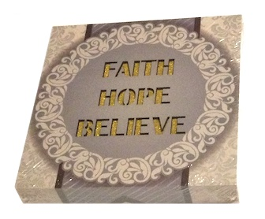
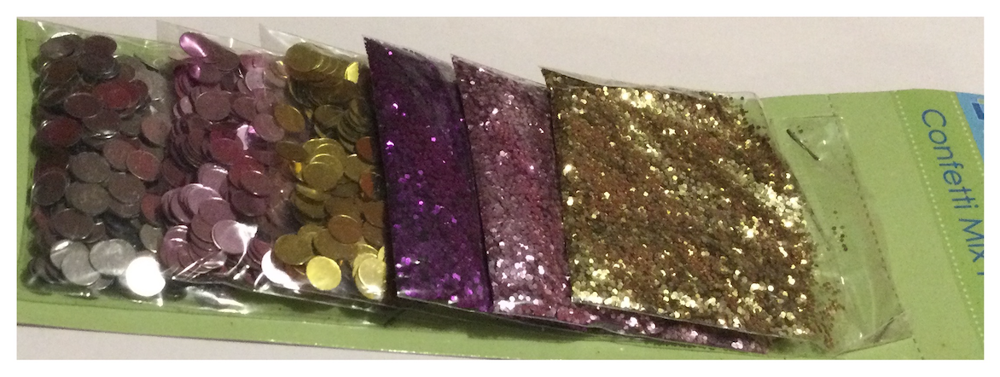

This page illustrates a few different categories of Artwork and Graphic Design.
Portfolio Sections: Professional Certificates | Pink Candy Product Line | Artwork/Graphic Design | Homepage

This is just a for fun hobby. There are definitely talented artists that create beautiful, unique, or customized pieces and sometimes it inspires me to do artwork for fun.
One reason I label this Artwork/Graphic Design is due to the basic and generalized nature of my art. It can be enhanced or computer edited for further and multiple uses.

Clip Art: The pictures are samples of clip art that I drew. While they can be colored in or further enhanced, these are just the black and white drawings. I left the first 2 partly inked to show the process I decided to select when drawing clip art. First I sketch in pencil, and then go over it in pen.


Photography: Different styles of photography.

Artwork: A bit of artwork.


Professional Certificates | Pink Candy Product Line | Artwork/Graphic Design | Homepage